Carolyn Yu
Overview
Role
I designed human factor
Collaborators
- Co-researcher: Yi-Hao Peng
- Co-programmer: Shi-Hong Liu, Chung-Wei Wang
- Advisor: Neng-Hao Yu, Mike Y. Chen
Method & Tools
- Method: User Study, Data Analysis, Data Visualization
- Tools: Unity, C#, Vive SRanipal SDK, Arduino
Research Process
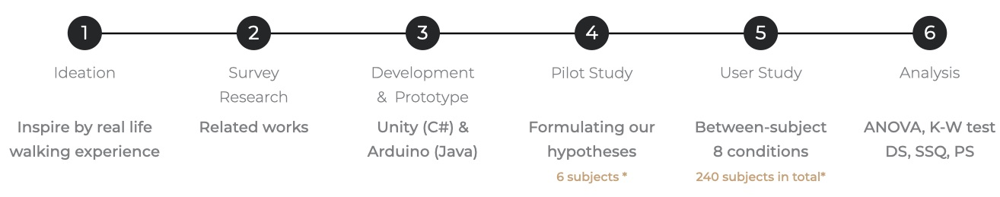
Problem
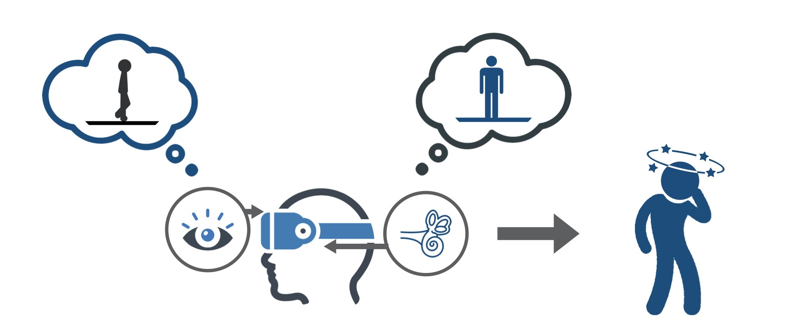
When walking in VR environments, the disparity in apparent motion between two of the sensory systems, the visual and the vestibular stimuli, is called sensory conflict, which induces VR sickness.
Problem Statement
Our goal is to look for a method that can be easily integrated into HMD to reduces VR sickness and enhance the walking realism.
Related Works
To solve the VR sickness, several methods were proposed, and we divide them into 3 groups.
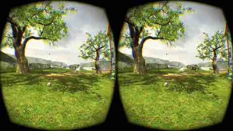
Visual modification
Their solution is effective, but the visual perception from the smooth movement used in the implementation resembles ”sliding” more than walking.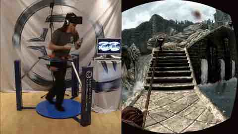
Body movement
Though this method might mitigate user’s fatigue, the occupied controllers meanwhile limit the scenario this approach could be applied on.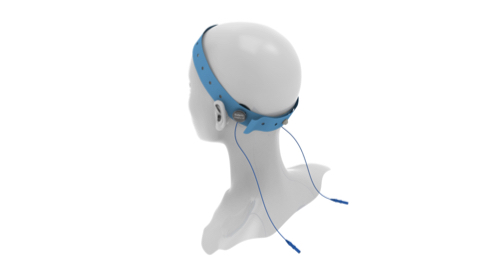
External stimulation
These results suggest that using an indirect, walking-related haptic illusion to recouple mismatched systems is a plausible approach.Ideation
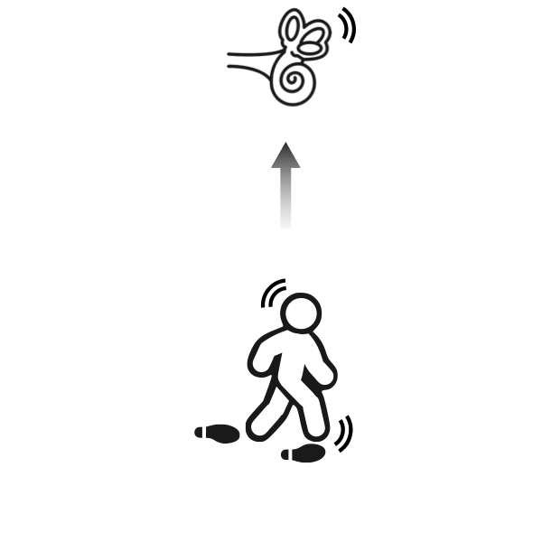
Developement
Design Principle
- Easy-integrated
- Non-intrusive surface-level vibration (~ 150 Hz)
Prototype
Due to varying head sizes among users wearing the VR system’s head-mounted display (HMD), I attached Velcro strips onto a headband that can be adjusted for individual fit and achieve flexible positioning from our prototype’s haptic vibrations. On the outer rim of the headband, I added a plastic strip layer and sewed together an array of cells of fixed lengths of 15 mm. Each cell has an opening on the top of the headband, which provides an enclosure for easy installation of the vibration motors. For vibrations, we used Parallax servos—12 mm coin-style, 3.3 V/90 mA, freq=9000 rpm—that operate at 150 Hz.
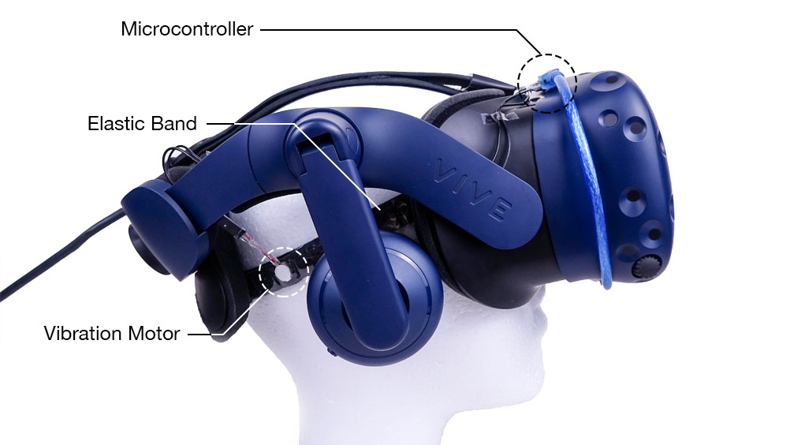
Scenes & Routes
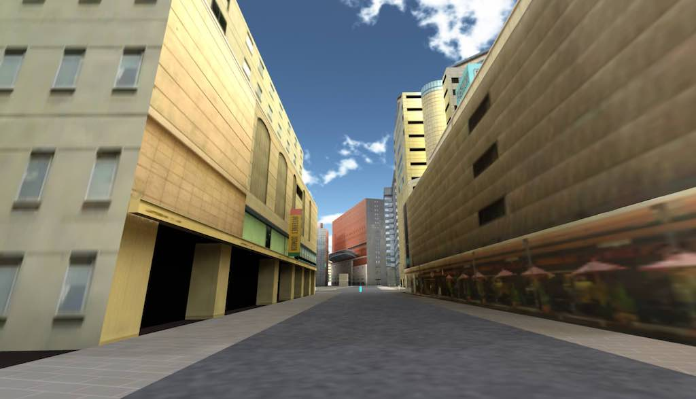
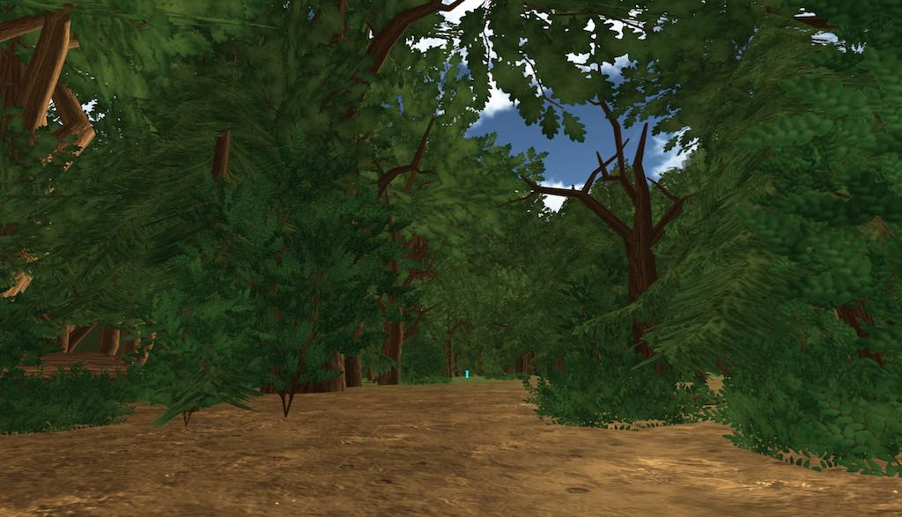
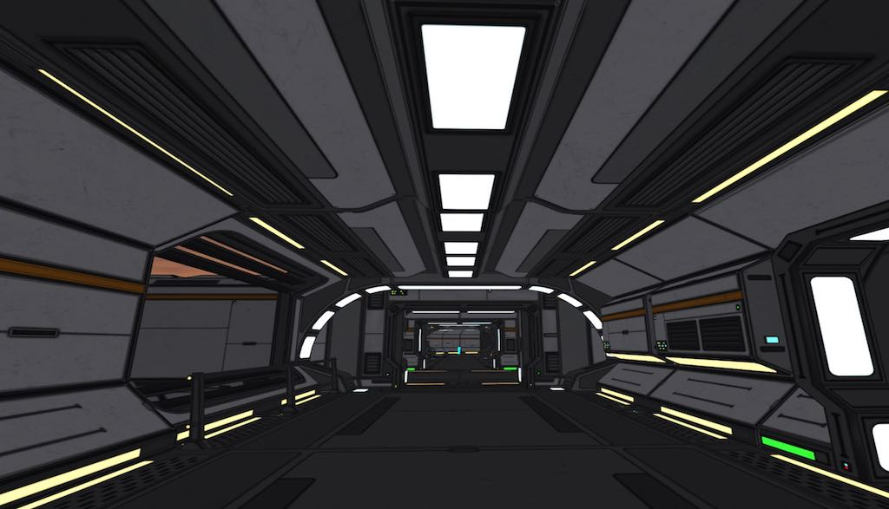
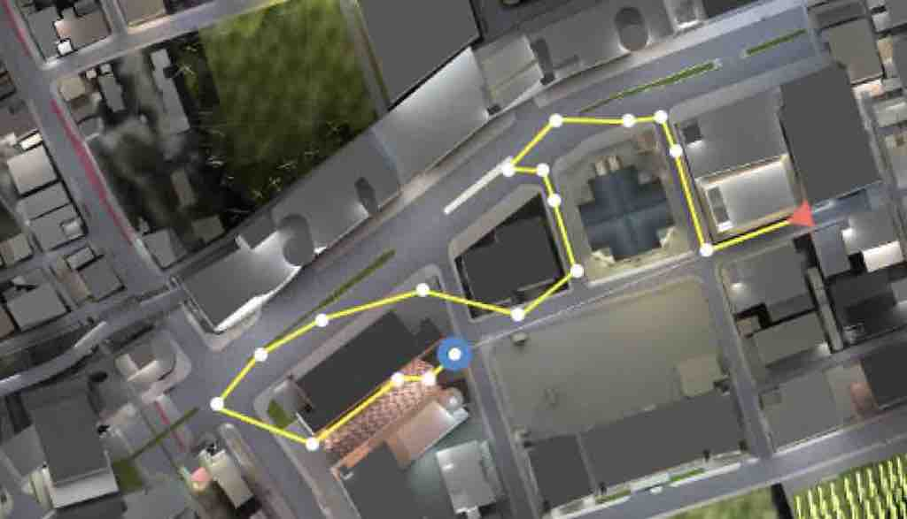
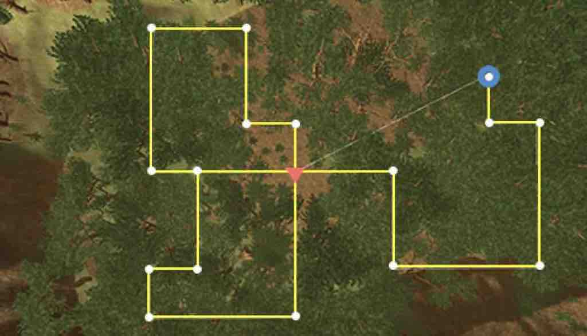
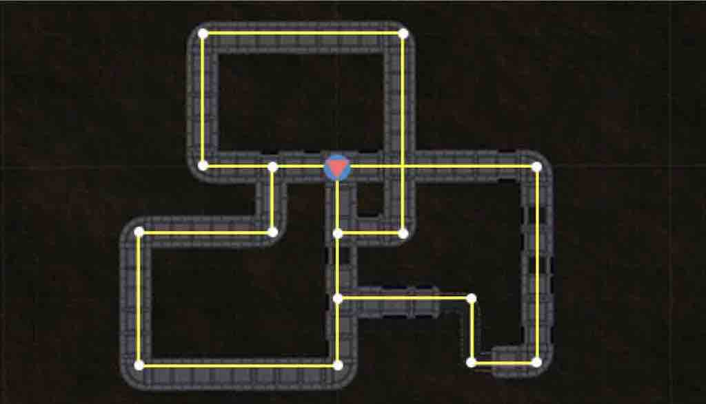
User study
To evaluate how the visual, auditory, and tactile feedback affected the VR walking experiences, we conducted a 240-person study to compare 4 vibrotactile designs with 3 audio-visual conditions and a tactile condition. The 8 conditions are as follows:
- 4 vibrotactile: combinations of 2 placement locations and 2 synchronization timing. The 2 locations are a) a single vibration motor on the back of the head vs. b) 2 vibration motors behind both ears. The 2 synchronization timing are a) random vs. b) synchronized to footsteps.
- 2 visual-only: with head-bobbing and without.
- 1 visual+audio: with synchronized footstep sounds.
- 1 tactile: PhantomLegs, which alternatingly taps the areas in front of both ears synchronized to footsteps.
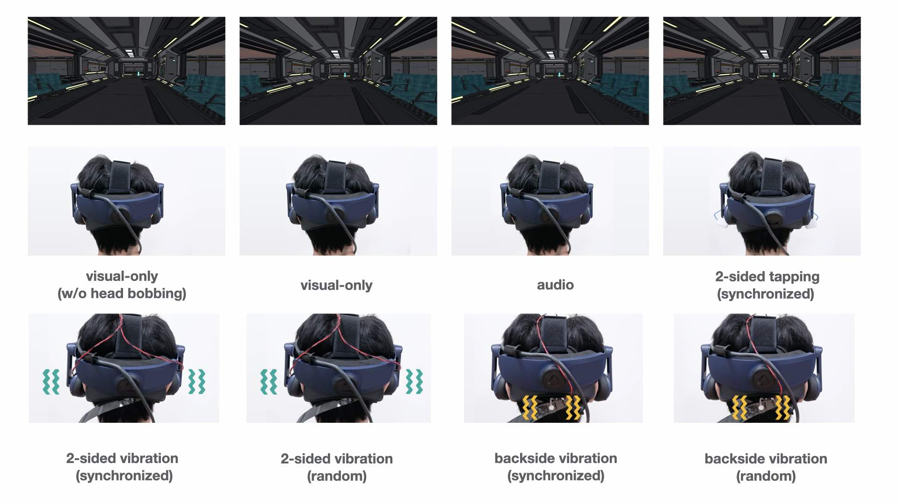
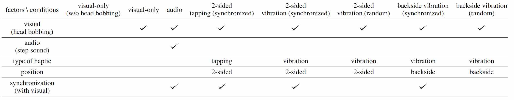
Configurations of each feedback condition in the study.Study Procedure
- Obtained participant's informed consent (IRB).
- Before the study, participants were asked to fill out a questionnaire about their personal information and any experiences related to FPV or VR applications.
- At the start of the study, each tactile feedback was applied to the users, where participants were able to adjust the amplitude level of the stimulation to a level that was comfortable for that time slot.
- During the experiment, participants were seated statically and passively walked through the virtual environment.
- For the study task, participants passed through virtual checkpoints that were scattered in three designed VR scenes with 3 three kinds of speed (2ms, 4m/s, and 6m/s).
Analysis
For our study’s measurements, we conducted three different questionnaires throughout the experiment.
- Discomfort Score: which was included in order to collect continuous data on VR sickness in the experiment. During the experiment—after passing every two checkpoints for twenty seconds each—with a played audio recording, which asked for their perceived level of discomfort that ranged from 0 (no feeling) to 10.
- Simulator Sickness Questionnaire (SSQ): where participants were asked before and after the study about sickness symptoms on several factors.
- Perceived Realism: where participants were asked: "How similar was the walking experience you just experienced compared to the walking experience in the real world?", which denoted the level of congruity between physical and virtual walking experience from 0 (totally different) to 10 (totally the same).
Result
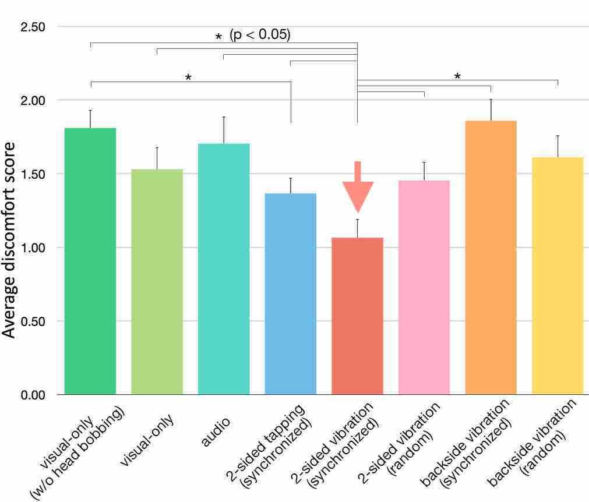
Discomfort Score
We employed a non-parametric Kruskal-Wallis test for determining whether there was any significant difference among the data. Our results demonstrated that 2-sided vibration (synchronized) feedback received significantly less perceived discomfort compared to all other conditions (*p < .05).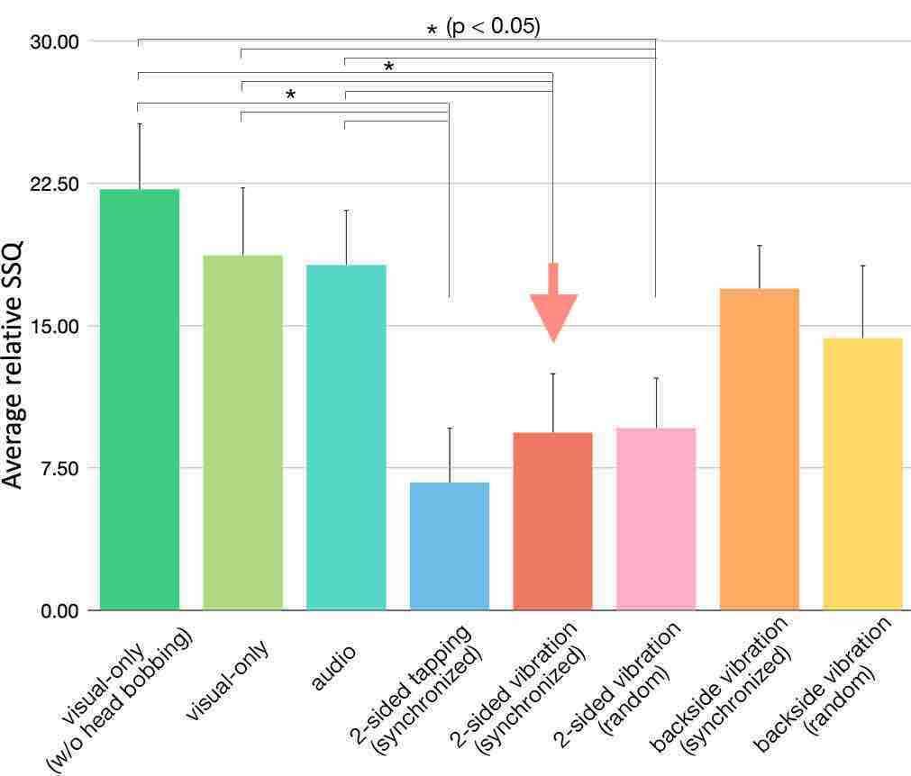
SSQ
We ran a mixedfactor 2 x 2 ANOVA on the RSS for the factors of visualtactile alignment (synchronized vs. random) and tactile placement (two-sided vs. backside). Our results suggested that two-sided vibrotactile feedback received lower RSS compared to backside stimulation (*p < .05).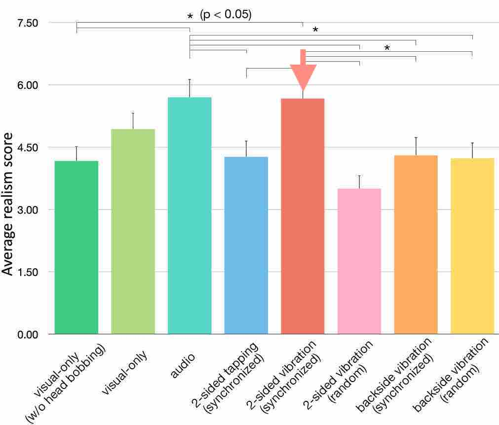
Perceived Realism
We ran a one-way ANOVA on all conditions and discovered that the two feedback conditions—audio and 2-sided vibration (synchronized)— provided significantly higher realism than most of the other conditions except for visual-only feedback: 2-sided vibration (synchronized) vs. visual-only; audio vs. visual-only.Conclusion
- We conducted a
240-person study to explore how head-region tactile feedback affects VR sickness, perceived discomfort, and realism for VR walking experiences. - Result shows WalkingVibe
significantly reduced VR sickness and discomfort whileenhancing walking realism . - In sum, WalkingVibe provides unobtrusive haptic feedback and is
easy to integrate into current VR headsets.
Extra Contributions
Publication
WalkingVibe: Reducing Virtual Reality Sickness and Improving Realism while Walking in VR using Unobtrusive Head-mounted Vibrotactile Feedback
In Proceedings of
Eye Tracking Analysis
To understand the relationship between VR sickness and the user's eye-movement behavior in the virtual environment, I developed an eye-tracking system in Unity including data recording, analysis, and visualization.
Eye Tracking Tool: Htc Vive Pro Eye
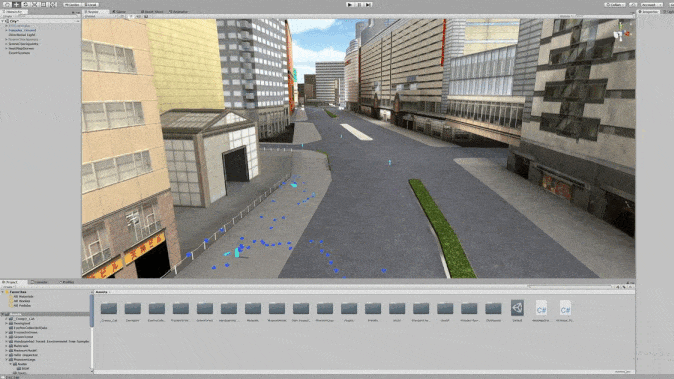
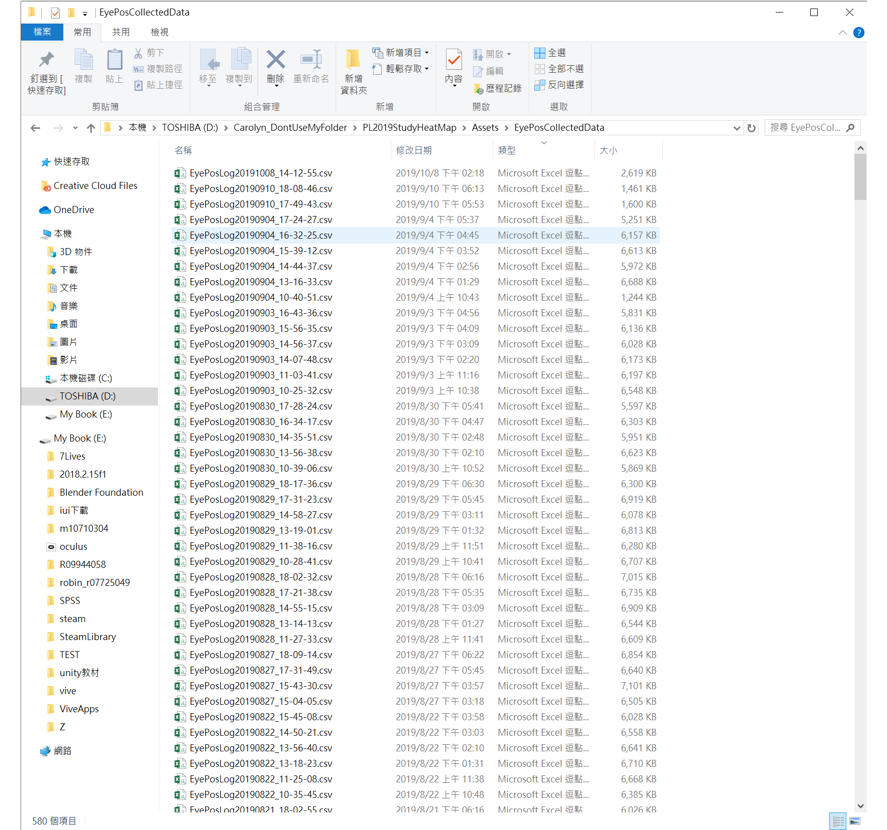
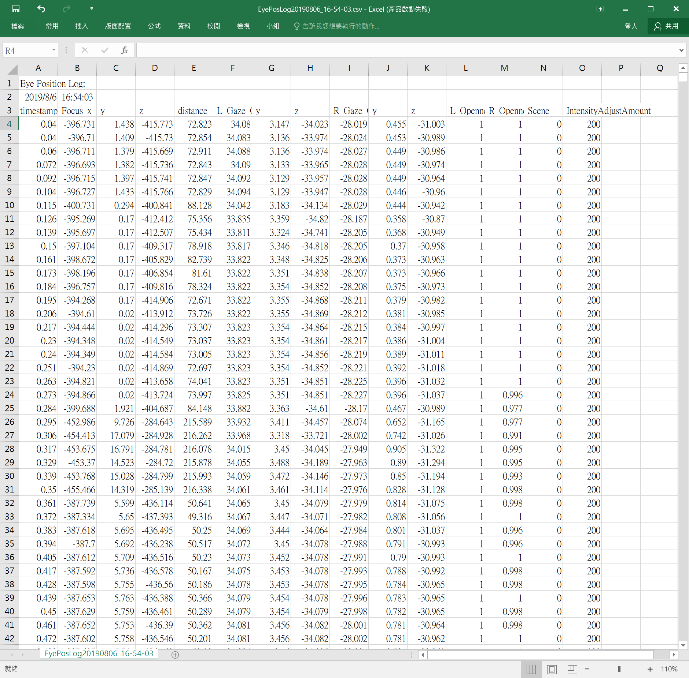
The eye position document and data recording format.